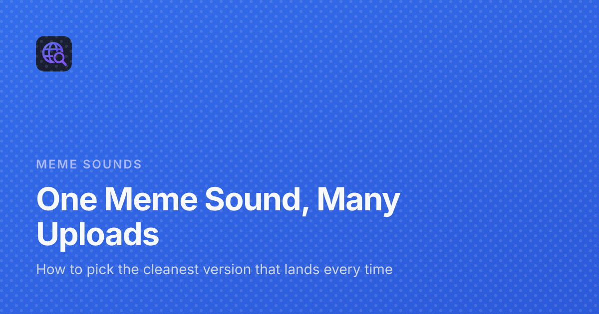

One Meme Sound, Many Uploads: How to Pick the Cleanest Version
Search for almost any famous meme sound and you won't find one file. You'll find several: the vine boom with a long silence in front of it, the vine boom bass boosted until it crackles, the vine boom with a second of the original video still attached, the vine boom that's somehow quieter than everything else. They all have the same name, and they're not the same sound.
For a quick laugh in a chat, any of them will do. For anything you'll use more than once, like a stream, a soundboard slot, a notification tone or a video edit, the version matters. I run Meme Tap, a meme soundboard, so I spend a lot of time listening to duplicates. This post is the checklist I use to pick the cleanest one.
Why one sound ends up with so many uploads
Meme sounds are copied, not distributed. Someone cuts a moment from a video, shares it, and others download and re-upload it. Each copy can pick up changes along the way:
- Different cut points. One person keeps the breath before the word, another cuts it off.
- Re-encoding. Every time a compressed file is saved again as a compressed file, it can lose a little detail.
- Deliberate edits. Bass boosted, sped up, slowed down, with reverb or echo. These are often jokes of their own.
- Leftovers. Background music, crowd noise or the end of someone else's sentence from the original source.
None of that is wrong. It just means you have to choose. The list of well-known meme sound effects on the Meme Tap blog makes the same point: most famous clips have several uploads, and it's worth trying more than one.
Check 1: does it start straight away?
This is the most important test, and the easiest. Press play and notice whether you hear the sound immediately or after a tiny pause.
Silence at the start is the most common reason a meme sound feels late. On a soundboard it feels like the button lagged. In a video, it means the sound lands after the moment it's reacting to. In a voice chat, people press the button twice because nothing happened the first time.
If the sound has a clean start, you'll hear the first hit the moment playback begins. If you want to see it, open the file in a trimmer and look at the waveform. A clean file has its first tall peak right at the left edge. A late file has a flat line first.
Check 2: is it the right length?
A meme sound should be as long as the joke and no longer. Compare the uploads you've found:
- Too long usually means extra context from the source: the sentence before, the reaction after, a fade into background music.
- Too short usually means the tail was cut off, so the sound stops abruptly instead of fading naturally.
- Just right starts with the sound and ends shortly after it fades, with nothing else attached.
Where you'll use it matters too. Some places, like Discord's built-in soundboard, only accept very short clips, so a long upload has to be cut anyway.
Check 3: is it clear, or distorted?
Many uploads are louder than the original because someone pushed the volume up to make the sound hit harder. Past a certain point the file can't hold the level and the loudest moments are flattened. You hear that as crackle, buzz or a harsh edge on the bass.
Sometimes that's the joke. A bass boosted version is a different meme from the clean one, and it has its place in edits where the distortion is the punchline. But for anything you'll play often or mix under speech, choose the clear version. Distortion gets tiring quickly, and it sounds worse on phone speakers and through voice chat compression.
A simple test: play the sound at a normal volume on headphones and then on a phone speaker. If it's clear on headphones and harsh on the phone, it's probably too hot for everyday use.
Check 4: is the loudness reasonable?
Loudness and distortion are different. A file can be clean and still much louder or quieter than everything around it.
Play your choice next to a few other sounds you use. If it jumps out far above them, it will startle people in a stream or a call. If it's much quieter, it will disappear under speech in a video. When there are several clean versions, pick the one whose loudness sits closest to the rest of your set. That's easier than fixing levels later.
Check 5: is there anything left over?
Listen once more, specifically for things that aren't the sound:
- background music from the original video,
- a second voice or crowd noise,
- a click or pop at the very start or end,
- a hiss or hum under everything.
Leftovers are a sign the clip was cut roughly. They also matter for rights: background music in a clip belongs to someone, and it's the kind of thing that gets videos muted. A clean effect without music is safer as well as better sounding.
Check 6: does it fit where it's going?
Finally, the right version depends on the job.
- Soundboard button or stream hotkey: instant start, short, moderate loudness.
- Video edit: clean start and a natural tail, so it can sit under speech.
- Notification tone: very short, clear on a phone speaker, not harsh at full volume.
- A deliberately chaotic edit: the bass boosted version may be exactly right.
Comparing versions quickly
You don't need special software for any of this. On Meme Tap, each sound has its own page where you can play it, download the MP3 and copy a link; the post on how sound effect buttons work on Meme Tap explains the layout. Searching a sound's name shows the duplicates together, so you can play them one after another and hear the differences in a few seconds.
My routine is simple: play each version once, drop the ones with a late start or obvious distortion, compare the rest for length and loudness, and keep the best one.
When no version is clean enough
Sometimes every upload has a problem. Usually the fix is easy. If the best version is clear but has silence at the start or extra material at the end, trim it. The online audio trimmer opens MP3, WAV and OGG files in the browser, lets you drag the start and end on the waveform, and saves the cut as WAV or MP3. The file isn't uploaded anywhere.
What trimming can't fix is distortion or background music mixed into the sound. If those are the problem, keep looking for a cleaner upload instead.
Quick checklist
- Starts immediately, with no silence in front.
- Length matches the joke, with a natural ending.
- Clear, not crackling, unless the distortion is the point.
- Loudness close to the rest of your sounds.
- No music, voices or noise left over from the source.
- Right for where it's going.
It takes a minute to compare uploads, and that minute decides whether the sound lands on time every time you use it.